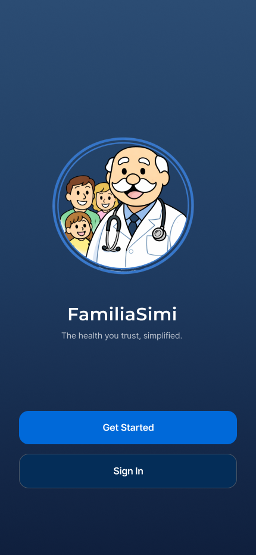

Projects

Family Health Dashboard
The Family Health Dashboard is a cross-platform mobile application prototype designed to provide families with a centralized and accessible way to manage health information. Built using React Native, JavaScript, and Expo, the application allows users to manage multiple family member profiles, track prescriptions, locate nearby healthcare facilities, and access important medical information from one place. The application incorporates features such as prescription and medical document scanning, English-Spanish translation, simplified explanations of medical terminology, and location-based clinic searches. The interface was designed with accessibility and ease of use in mind, particularly for situations where users need to quickly access or understand health information. Technologies: React Native, JavaScript, Expo, Camera/OCR API, Translation API, Maps/Location API.